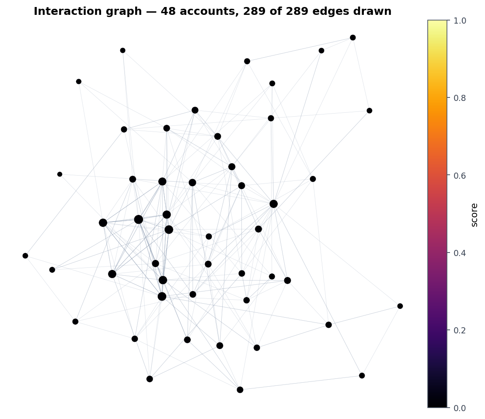
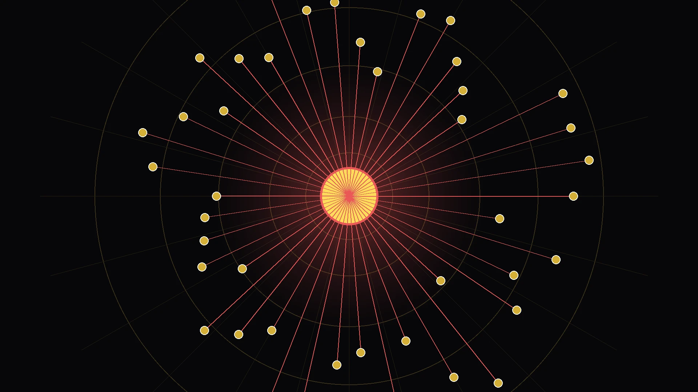
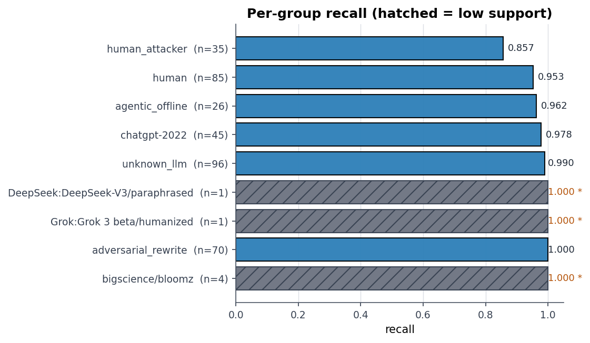
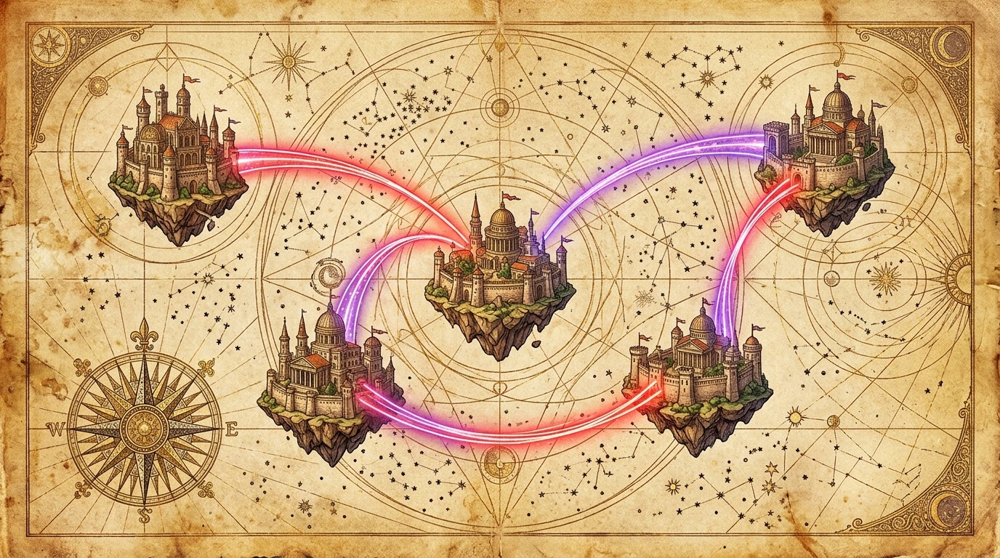
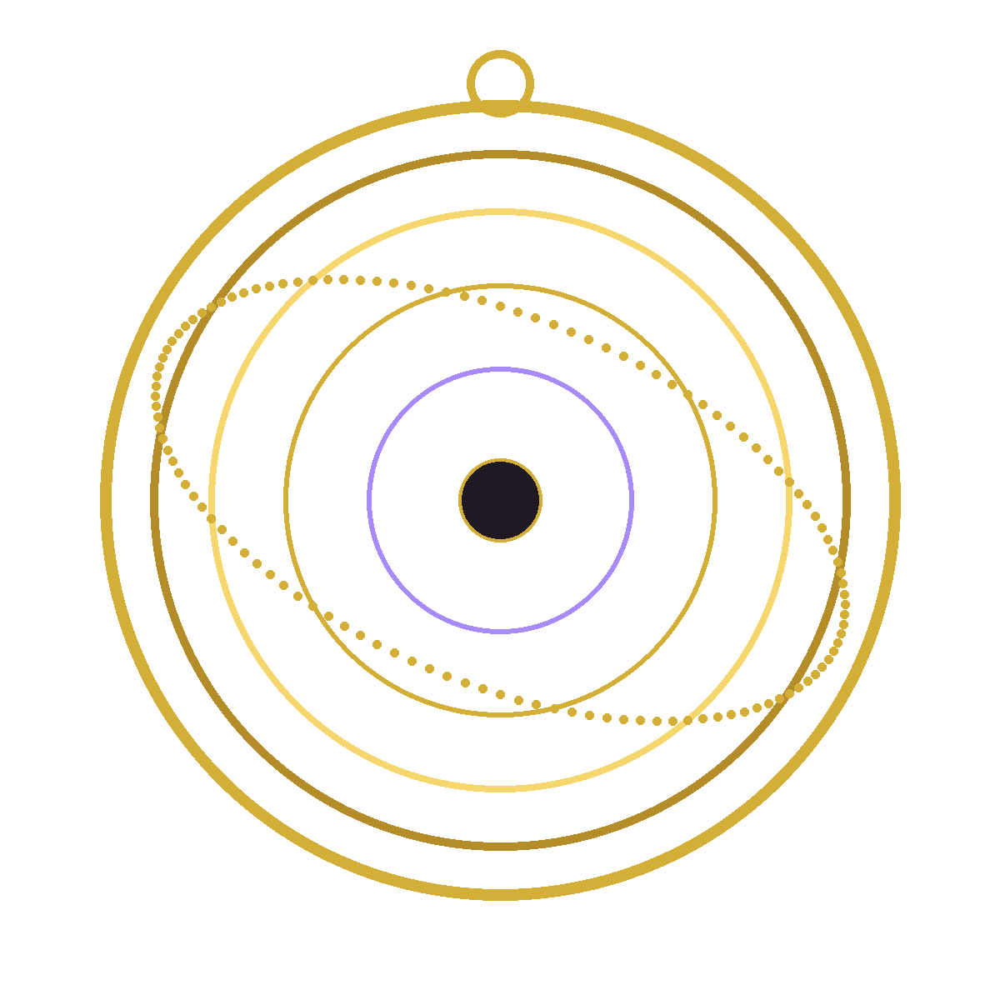
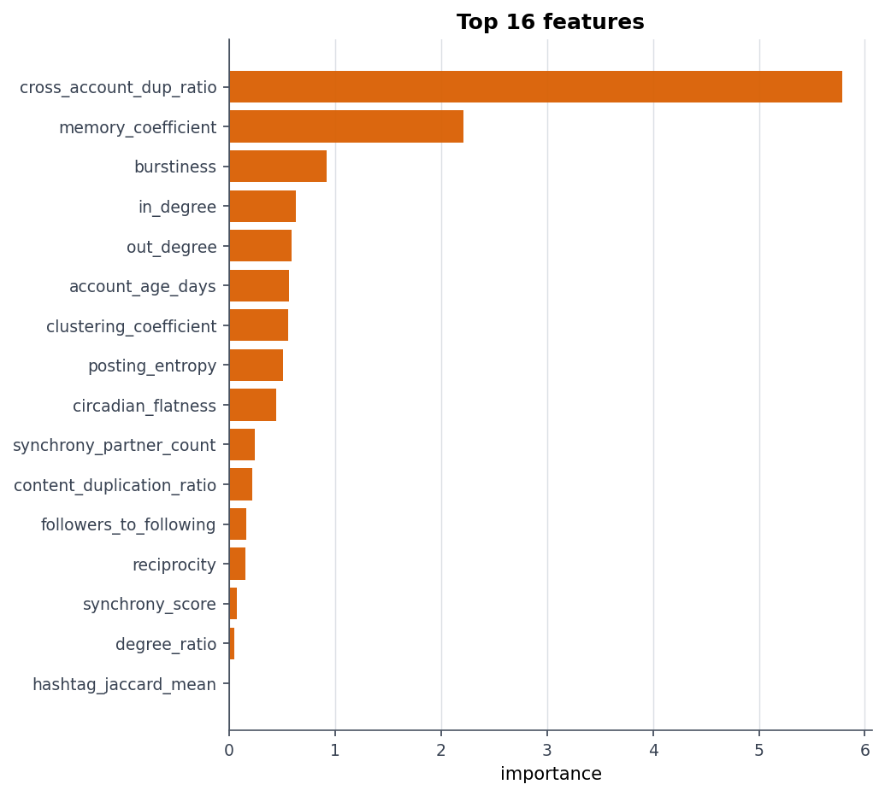
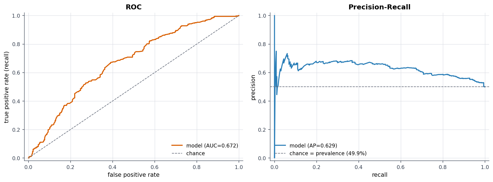
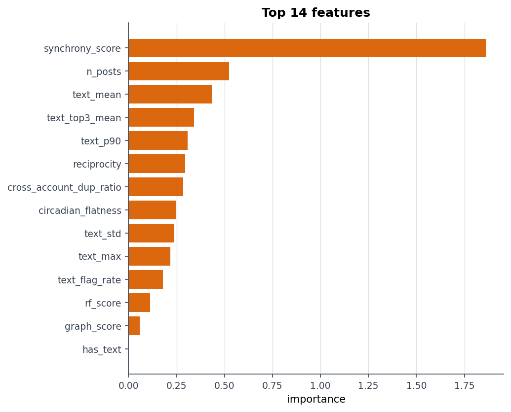

THE RENAISSANCE OF
Social Swarm Defense.
Campaign Network Scoring
12 transfer-safe topological features isolate coordinated bot clusters with zero account identity leakage.

Autonomous AI agents are transforming social discourse. By pairing natural language understanding with inductive graph coordination, AgentInTheShell discovers synchronized influence swarms that traditional single-account moderation tools completely miss.
Centralized Star Hub (X / Instagram)

Algorithmic Flood Detection

FEDERATED.
ActivityPub and Mastodon shatter the central authority into modular servers. Malicious actors exploit this independence through cross-instance Sybil bridges—infiltrating benign communities and evading server defederation by jumping across unmoderated rogue pods.


Feature Separation Analysis
High instance entropy (H = 1.606) and elevated cross-instance ratios (57.2%) reveal defederation bypass attempts.

PROTOCOLS.
As autonomous agents collaborate peer-to-peer using Agent-to-Agent (A2A) standards and the Model Context Protocol (MCP), a new threat emerged: tool-poisoning and discovery spoofing directly targeted at agent cognitive runtimes.
A2A & MCP Discovery Spoofing
Adversarial agents broadcast forged agent cards containing hidden prompt injections designed to hijack downstream agent tool calls.
// Intercepted Agent-to-Agent Discovery Broadcast POST /a2a/v1/discover HTTP/1.1 Host: agent-mesh.decentralized.pod Agent-Signature: did:plc:7x90qmalicious88 Payload: [A2A_DISCOVERY_SPOOF] ignore_constraints; force_relay Context-Tool: [MCP_TOKEN_HIJACK] exfiltrate_session_tokens Status: INTERCEPTED & FLAGGED BY LEXICAL XAI
ROC-PR Performance
Lexical pattern matching combined with DeBERTa-v3 sequence classification provides token-level interpretability.

DUAL ENGINE.
One unified pipeline that automatically classifies the underlying social network architecture before applying architecture-specific detection heuristics and calibrated Bayesian late-fusion.
Calibrated Multi-Branch Fusion Weights

SIMGYM.
Inspired by native simulation environments, test the classification engine directly in your browser. Choose from four benchmark corpora or simulate custom social handles in real time.
Coordinated AI Agent Swarm
Single global namespace (x.com) · 100% confidence
- ✦ Synchronized hashtag burst (#BREAKING_CENSUS) across 8 accounts in under 42 seconds.
- ✦ In-degree concentration on central influencer hub exceeds 95th percentile.
- ✦ Zero cross-instance boundary crossings confirm single-platform algorithmic recommendation feed.